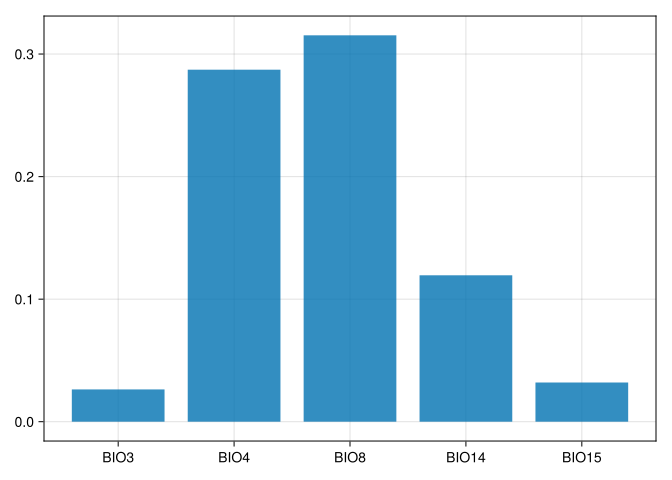

using Pkg
Pkg.activate(@__DIR__)
using Random
Random.seed!(1234567) Activating project at `~/Code/Workspaces/InterpretableSDMs_CSEE2025`TaskLocalRNG()CSEE 2025 Workshop
Michael D. Catchen ![]()
Timothée Poisot
Gabriel Dansereau
Ariane Bussières-Fournel
This notebook describes how to use SpeciesDistribution toolkit to obtain data for species distribution models, as well as train, validate, and interpret various machine-learning based SDMs.
using Pkg
Pkg.activate(@__DIR__)
using Random
Random.seed!(1234567) Activating project at `~/Code/Workspaces/InterpretableSDMs_CSEE2025`TaskLocalRNG()using SpeciesDistributionToolkit
using CairoMakie
using Dates
using PrettyTables
using Statistics
using DataFrames
const SDT = SpeciesDistributionToolkitSpeciesDistributionToolkitIn this tutorial, we are going to build a species distribution model (SDM) for the species Turdus torquatus, a European thrush that has breeding grounds in the French, Swiss, and Italian alps. We’ll particularly only focus on modeling its range in Switzerland, to present SpeciesDistributionToolkit’s abilities for working with polygons for countries and their subdivisions.
SpeciesDistributionToolkit.jl (SDT) is a package we (the authors) have developed over several years for working with species distribution data, fitting SDMs with various machine learning methods, and tools for interpreting these models. You can read the (recently acceptedin PCI Ecology) preprint here.
Specifically, SDT is a monorepo, composed of many subpackages — the ones we’ll use here are:
Let’s start by downloading a polygon for the border of Switzerland.
osm_provider = PolygonData(OpenStreetMap, Places)
switzerland = getpolygon(osm_provider, place="Switzerland")FeatureCollection with 1 features, each with 0 propertiesWe can confirm we downloaded the right data by visualizing it. All visualizations in this tutorial will use the Makie library1.
1 Makie uses various “backends” to produce figures, depending on the desired output format. We ran using CairoMakie to use the Cairo backend, which is used for producing publication quality PNGs and vector graphics.
lines(switzerland)Looks good! Now we’ll load the environmental data we’ll use.
We’ll download environment data from CHELSA, which provides 19 bioclimatic layers at 1km\(^2\) resolution. The interface for downloading raster data is similar to polygon data — first we define a RasterData provider[^rasterdata] which takes in the database (CHELSA2) and particular dataset (BioClim) to download.
2: A full list of databases, and the datasets they provide, is available here, and in the “Datasets” tab in the top navigation bar.
2 rasterdata
chelsa_provider = RasterData(CHELSA2, BioClim)RasterData{CHELSA2, BioClim}(CHELSA2, BioClim)We can use the layerdescriptions method3 to list the names of all of the layers provided by chelsa_provider, along with their descriptions.
3 A method is effectively the same as a function in other programming languages. There is a slight difference in the context of object-oriented programming, which is why Julia uses that terminology, but for our purposes the two are equivalent.
layerdescriptions(chelsa_provider)Dict{String, String} with 19 entries:
"BIO8" => "Mean Temperature of Wettest Quarter"
"BIO14" => "Precipitation of Driest Month"
"BIO16" => "Precipitation of Wettest Quarter"
"BIO18" => "Precipitation of Warmest Quarter"
"BIO19" => "Precipitation of Coldest Quarter"
"BIO10" => "Mean Temperature of Warmest Quarter"
"BIO12" => "Annual Precipitation"
"BIO13" => "Precipitation of Wettest Month"
"BIO2" => "Mean Diurnal Range (Mean of monthly (max temp - min temp))"
"BIO11" => "Mean Temperature of Coldest Quarter"
"BIO6" => "Min Temperature of Coldest Month"
"BIO4" => "Temperature Seasonality (standard deviation ×100)"
"BIO17" => "Precipitation of Driest Quarter"
"BIO7" => "Temperature Annual Range (BIO5-BIO6)"
"BIO1" => "Annual Mean Temperature"
"BIO5" => "Max Temperature of Warmest Month"
"BIO9" => "Mean Temperature of Driest Quarter"
"BIO3" => "Isothermality (BIO2/BIO7) (×100)"
"BIO15" => "Precipitation Seasonality (Coefficient of Variation)"To download a layer, we use the SDMLayer constructor, and pass the specific name of the we want layer keyword argument. We also pass the bounding box of the region we want with the left, right, bottom and top keywords.
For example, to download BIO1 (mean annual temperature) at longitudes from 40° to 43°, and latitudes from 30° to 35°, we run
SDMLayer(chelsa_provider, layer="BIO1", left=40, right=43, bottom=30, top=35)üó∫Ô∏è A 601 × 361 layer with 216961 UInt16 cells
Projection: +proj=longlat +datum=WGS84 +no_defsWe want to download each layer for the bounding box of Switzerland. We can obtain this by using the boundingbox method4
4 Note that we use SDT.boundingbox because boundingbox shares a name with another method in CairoMakie, so we have to specificy which boundingbox method we mean.
SDT.boundingbox(switzerland)(left = 5.955911159515381, right = 10.492294311523438, bottom = 45.81795883178711, top = 47.80845260620117)Note that this returns a named-tuple with each coordinate named in the same way we need them for downloading a layer. This allows us to directly input the result of SDT.boundingbox into SDMLayer using splatting5, e.g.
5 Splatting refers to adding ... after a collection of items (like a vector or tuple), which results in them each being processed as sequential arguments. For example, if x=[1,2,3] and you call f(x...), this is equivalent to f(1,2,3).
SDMLayer(chelsa_provider; layer="BIO1", SDT.boundingbox(switzerland)...)üó∫Ô∏è A 240 × 546 layer with 131040 UInt16 cells
Projection: +proj=longlat +datum=WGS84 +no_defsWe can then load all 19 bioclimatic variables by using layers, which returns a list of the names of each layer provided by chelsa_provider, e.g.
layers(chelsa_provider)19-element Vector{String}:
"BIO1"
"BIO2"
"BIO3"
"BIO4"
"BIO5"
"BIO6"
"BIO7"
"BIO8"
"BIO9"
"BIO10"
"BIO11"
"BIO12"
"BIO13"
"BIO14"
"BIO15"
"BIO16"
"BIO17"
"BIO18"
"BIO19"We can then load them all in a single line using an in-line for loop.
Note that the first time you run the following lines, the entirety of each layer will be downloaded and cached. This means the first time you run this line, it will take several minutes, but every subsequent time will be nearly instant, because the layers are saved in SimpleSDMDataset’s cache (by default, this is located in ~/.julia/SimpleSDMDatasets/).
env_covariates = SDMLayer{Float32}[
SDMLayer(
chelsa_provider;
layer = layername,
SDT.boundingbox(switzerland)...
)
for layername in layers(chelsa_provider)
]19-element Vector{SDMLayer{Float32}}:
üó∫Ô∏è A 240 × 546 layer (131040 Float32 cells)
üó∫Ô∏è A 240 × 546 layer (131040 Float32 cells)
üó∫Ô∏è A 240 × 546 layer (131040 Float32 cells)
üó∫Ô∏è A 240 × 546 layer (131040 Float32 cells)
üó∫Ô∏è A 240 × 546 layer (131040 Float32 cells)
üó∫Ô∏è A 240 × 546 layer (131040 Float32 cells)
üó∫Ô∏è A 240 × 546 layer (131040 Float32 cells)
üó∫Ô∏è A 240 × 546 layer (131040 Float32 cells)
üó∫Ô∏è A 240 × 546 layer (131040 Float32 cells)
üó∫Ô∏è A 240 × 546 layer (131040 Float32 cells)
üó∫Ô∏è A 240 × 546 layer (131040 Float32 cells)
üó∫Ô∏è A 240 × 546 layer (131040 Float32 cells)
üó∫Ô∏è A 240 × 546 layer (131040 Float32 cells)
üó∫Ô∏è A 240 × 546 layer (131040 Float32 cells)
üó∫Ô∏è A 240 × 546 layer (131040 Float32 cells)
üó∫Ô∏è A 240 × 546 layer (131040 Float32 cells)
üó∫Ô∏è A 240 × 546 layer (131040 Float32 cells)
üó∫Ô∏è A 240 × 546 layer (131040 Float32 cells)
üó∫Ô∏è A 240 × 546 layer (131040 Float32 cells)Note that there are many different ways to do iteration in Julia, not just the in-line for loop used above.
env_covariates = SDMLayer{Float32}[]
for i in 1:19
push!(env_covariates,
SDMLayer(
chelsa_provider;
layer = "BIO$i",
SDT.boundingbox(switzerland)...
)
)
endmap with layer namesenv_covariates = map(
layername -> Float32.(SDMLayer(
chelsa_provider;
layer = layername,
SDT.boundingbox(switzerland)...
)),
layers(chelsa_provider)
);Now we can visualize the first layer, and our polygon. We’ll plot the first environmental layer with heatmap, and we’ll pass color=:white and linewidth=3 to make our polygon easier to see.
heatmap(env_covariates[begin])
lines!(switzerland, color=:white, linewidth=3)
current_figure()
Note that although our raster has the same extent as our polygon, it extends outside our polygon’s border. We can fix this with the mask! method6.
6 Methods in julia that are followed with an exclamation mark (like mask!) are mutating methods, meaning they make permanent changes to their inputs. This means we don’t need to save the result — the mask will already be applied to env_covariates. (Note this is not a requirement, but a convention among Julia developers to indicate which methods make changes to their inputs, and which don’t,)
mask!(env_covariates, switzerland)19-element Vector{SDMLayer{Float32}}:
üó∫Ô∏è A 240 × 546 layer (70065 Float32 cells)
üó∫Ô∏è A 240 × 546 layer (70065 Float32 cells)
üó∫Ô∏è A 240 × 546 layer (70065 Float32 cells)
üó∫Ô∏è A 240 × 546 layer (70065 Float32 cells)
üó∫Ô∏è A 240 × 546 layer (70065 Float32 cells)
üó∫Ô∏è A 240 × 546 layer (70065 Float32 cells)
üó∫Ô∏è A 240 × 546 layer (70065 Float32 cells)
üó∫Ô∏è A 240 × 546 layer (70065 Float32 cells)
üó∫Ô∏è A 240 × 546 layer (70065 Float32 cells)
üó∫Ô∏è A 240 × 546 layer (70065 Float32 cells)
üó∫Ô∏è A 240 × 546 layer (70065 Float32 cells)
üó∫Ô∏è A 240 × 546 layer (70065 Float32 cells)
üó∫Ô∏è A 240 × 546 layer (70065 Float32 cells)
üó∫Ô∏è A 240 × 546 layer (70065 Float32 cells)
üó∫Ô∏è A 240 × 546 layer (70065 Float32 cells)
üó∫Ô∏è A 240 × 546 layer (70065 Float32 cells)
üó∫Ô∏è A 240 × 546 layer (70065 Float32 cells)
üó∫Ô∏è A 240 × 546 layer (70065 Float32 cells)
üó∫Ô∏è A 240 × 546 layer (70065 Float32 cells)and we can verify this worked by plotting it again:
heatmap(env_covariates[begin])
lines!(switzerland, color=:red, linewidth=3)
current_figure()
Let’s plot a few of them.
layers_to_plot = [1, 4, 12, 15]
f = Figure()
for (i,ci) in enumerate(CartesianIndices((1:2,1:2)))
this_layer = layers(chelsa_provider)[layers_to_plot[i]]
ax = Axis(
f[ci[1], ci[2]],
title=layerdescriptions(chelsa_provider)[this_layer],
titlesize=12
)
heatmap!(ax, env_covariates[layers_to_plot[i]])
hidedecorations!(ax)
hidespines!(ax)
end
Now we’ll use the GBIF.jl subpackage to download occurrence data from the Global Biodiversity Information Facility (GBIF) for our species, Turdus torquatus. We do this with the taxon method.
ouzel = taxon("Turdus torquatus")GBIF taxon -- Turdus torquatusWe’ll then use the occurrences method to setup a data download from GBIF. We pass the taxon, ouzel, and an environmental covariate (with first(env_covariates)) representing the extent from which we want to download occurrences. The function also takes keyword arguments that are specified in the GBIF API.
presences = occurrences(
ouzel,
first(env_covariates),
"occurrenceStatus" => "PRESENT",
"limit" => 300,
"country" => "CH",
"datasetKey" => "4fa7b334-ce0d-4e88-aaae-2e0c138d049e",
)GBIF records: downloaded 300 out of 1404Note that this only downloads the first 300 occurrences, because the total number of records can vary drastically depending on the species and extent, and the GBIF streaming API has a hard limit at 200000 records, and querying large amounts of using the streaming API is woefully inefficient. For data volumes above 10000 observations, the suggested solution is to rely on the download interface on GBIF.
We can use the count method to determine how many total records match our criteria
count(presences)1404Because this is a reasonable number, we can download the rest of the occurrences using a while loop, and a the occurrences! method to iterate and download the remaining occurrences.
while length(presences) < count(presences)
occurrences!(presences)
endGBIF has a built-in Table.jl API, which means we can easily convert the occurrence records to a DataFrame:
DataFrame(presences)| Row | key | datasetKey | dataset | publishingOrgKey | publishingCountry | institutionCode | protocol | countryCode | country | basisOfRecord | individualCount | latitude | longitude | precision | uncertainty | geodetic | date | identified | issues | taxonKey | rank | taxon | generic | epithet | vernacular | scientific | observer | license | presence |
|---|---|---|---|---|---|---|---|---|---|---|---|---|---|---|---|---|---|---|---|---|---|---|---|---|---|---|---|---|---|
| Int64 | String | Missing | String | String | String | String | String | String | Symbol | Int64? | Float64 | Float64 | Missing | Missing | String | Missing | Missing | Array… | Int64 | String | GBIFTaxon | String | String | String | String | String | String | Bool | |
| 1 | 4709728505 | 4fa7b334-ce0d-4e88-aaae-2e0c138d049e | missing | e2e717bf-551a-4917-bdc9-4fa0f342c530 | CH | CLO | DWC_ARCHIVE | CH | Switzerland | HUMAN_OBSERVATION | 1 | 46.3404 | 7.63405 | missing | missing | WGS84 | missing | missing | [:CONTINENT_DERIVED_FROM_COORDINATES, :TAXON_MATCH_TAXON_CONCEPT_ID_IGNORED] | 7865305 | SPECIES | GBIF taxon -- Turdus torquatus\n | Turdus | torquatus | Ring Ouzel | Turdus torquatus Linnaeus, 1758 | obsr788756 | http://creativecommons.org/licenses/by/4.0/legalcode | true |
| 2 | 4631294555 | 4fa7b334-ce0d-4e88-aaae-2e0c138d049e | missing | e2e717bf-551a-4917-bdc9-4fa0f342c530 | CH | CLO | DWC_ARCHIVE | CH | Switzerland | HUMAN_OBSERVATION | 3 | 47.1648 | 9.19779 | missing | missing | WGS84 | missing | missing | [:CONTINENT_DERIVED_FROM_COORDINATES, :TAXON_MATCH_TAXON_CONCEPT_ID_IGNORED] | 7865305 | SPECIES | GBIF taxon -- Turdus torquatus\n | Turdus | torquatus | Ring Ouzel | Turdus torquatus Linnaeus, 1758 | obsr1473331 | http://creativecommons.org/licenses/by/4.0/legalcode | true |
| 3 | 4717153698 | 4fa7b334-ce0d-4e88-aaae-2e0c138d049e | missing | e2e717bf-551a-4917-bdc9-4fa0f342c530 | CH | CLO | DWC_ARCHIVE | CH | Switzerland | HUMAN_OBSERVATION | 1 | 46.3878 | 8.02234 | missing | missing | WGS84 | missing | missing | [:CONTINENT_DERIVED_FROM_COORDINATES, :TAXON_MATCH_TAXON_CONCEPT_ID_IGNORED] | 7865305 | SPECIES | GBIF taxon -- Turdus torquatus\n | Turdus | torquatus | Ring Ouzel | Turdus torquatus Linnaeus, 1758 | obsr1538171 | http://creativecommons.org/licenses/by/4.0/legalcode | true |
| 4 | 4703405324 | 4fa7b334-ce0d-4e88-aaae-2e0c138d049e | missing | e2e717bf-551a-4917-bdc9-4fa0f342c530 | CH | CLO | DWC_ARCHIVE | CH | Switzerland | HUMAN_OBSERVATION | 1 | 46.3878 | 8.02234 | missing | missing | WGS84 | missing | missing | [:CONTINENT_DERIVED_FROM_COORDINATES, :TAXON_MATCH_TAXON_CONCEPT_ID_IGNORED] | 7865305 | SPECIES | GBIF taxon -- Turdus torquatus\n | Turdus | torquatus | Ring Ouzel | Turdus torquatus Linnaeus, 1758 | obsr2869500 | http://creativecommons.org/licenses/by/4.0/legalcode | true |
| 5 | 4698992061 | 4fa7b334-ce0d-4e88-aaae-2e0c138d049e | missing | e2e717bf-551a-4917-bdc9-4fa0f342c530 | CH | CLO | DWC_ARCHIVE | CH | Switzerland | HUMAN_OBSERVATION | 3 | 47.1861 | 9.35102 | missing | missing | WGS84 | missing | missing | [:CONTINENT_DERIVED_FROM_COORDINATES, :TAXON_MATCH_TAXON_CONCEPT_ID_IGNORED] | 7865305 | SPECIES | GBIF taxon -- Turdus torquatus\n | Turdus | torquatus | Ring Ouzel | Turdus torquatus Linnaeus, 1758 | obsr2670291 | http://creativecommons.org/licenses/by/4.0/legalcode | true |
| 6 | 4611055512 | 4fa7b334-ce0d-4e88-aaae-2e0c138d049e | missing | e2e717bf-551a-4917-bdc9-4fa0f342c530 | CH | CLO | DWC_ARCHIVE | CH | Switzerland | HUMAN_OBSERVATION | 6 | 46.8433 | 7.98554 | missing | missing | WGS84 | missing | missing | [:CONTINENT_DERIVED_FROM_COORDINATES, :TAXON_MATCH_TAXON_CONCEPT_ID_IGNORED] | 7865305 | SPECIES | GBIF taxon -- Turdus torquatus\n | Turdus | torquatus | Ring Ouzel | Turdus torquatus Linnaeus, 1758 | obsr2692703 | http://creativecommons.org/licenses/by/4.0/legalcode | true |
| 7 | 4794340181 | 4fa7b334-ce0d-4e88-aaae-2e0c138d049e | missing | e2e717bf-551a-4917-bdc9-4fa0f342c530 | CH | CLO | DWC_ARCHIVE | CH | Switzerland | HUMAN_OBSERVATION | 1 | 46.5887 | 6.17083 | missing | missing | WGS84 | missing | missing | [:CONTINENT_DERIVED_FROM_COORDINATES, :TAXON_MATCH_TAXON_CONCEPT_ID_IGNORED] | 7865305 | SPECIES | GBIF taxon -- Turdus torquatus\n | Turdus | torquatus | Ring Ouzel | Turdus torquatus Linnaeus, 1758 | obsr1538171 | http://creativecommons.org/licenses/by/4.0/legalcode | true |
| 8 | 4639401120 | 4fa7b334-ce0d-4e88-aaae-2e0c138d049e | missing | e2e717bf-551a-4917-bdc9-4fa0f342c530 | CH | CLO | DWC_ARCHIVE | CH | Switzerland | HUMAN_OBSERVATION | 11 | 46.8154 | 9.76794 | missing | missing | WGS84 | missing | missing | [:CONTINENT_DERIVED_FROM_COORDINATES, :TAXON_MATCH_TAXON_CONCEPT_ID_IGNORED] | 7865305 | SPECIES | GBIF taxon -- Turdus torquatus\n | Turdus | torquatus | Ring Ouzel | Turdus torquatus Linnaeus, 1758 | obsr1473331 | http://creativecommons.org/licenses/by/4.0/legalcode | true |
| 9 | 4779612275 | 4fa7b334-ce0d-4e88-aaae-2e0c138d049e | missing | e2e717bf-551a-4917-bdc9-4fa0f342c530 | CH | CLO | DWC_ARCHIVE | CH | Switzerland | HUMAN_OBSERVATION | 7 | 46.7888 | 6.488 | missing | missing | WGS84 | missing | missing | [:CONTINENT_DERIVED_FROM_COORDINATES, :TAXON_MATCH_TAXON_CONCEPT_ID_IGNORED] | 7865305 | SPECIES | GBIF taxon -- Turdus torquatus\n | Turdus | torquatus | Ring Ouzel | Turdus torquatus Linnaeus, 1758 | obsr109021 | http://creativecommons.org/licenses/by/4.0/legalcode | true |
| 10 | 4723809355 | 4fa7b334-ce0d-4e88-aaae-2e0c138d049e | missing | e2e717bf-551a-4917-bdc9-4fa0f342c530 | CH | CLO | DWC_ARCHIVE | CH | Switzerland | HUMAN_OBSERVATION | 4 | 47.0041 | 9.50994 | missing | missing | WGS84 | missing | missing | [:CONTINENT_DERIVED_FROM_COORDINATES, :TAXON_MATCH_TAXON_CONCEPT_ID_IGNORED] | 7865305 | SPECIES | GBIF taxon -- Turdus torquatus\n | Turdus | torquatus | Ring Ouzel | Turdus torquatus Linnaeus, 1758 | obsr2900560 | http://creativecommons.org/licenses/by/4.0/legalcode | true |
| 11 | 4724185634 | 4fa7b334-ce0d-4e88-aaae-2e0c138d049e | missing | e2e717bf-551a-4917-bdc9-4fa0f342c530 | CH | CLO | DWC_ARCHIVE | CH | Switzerland | HUMAN_OBSERVATION | 6 | 46.9023 | 8.67436 | missing | missing | WGS84 | missing | missing | [:COORDINATE_ROUNDED, :CONTINENT_DERIVED_FROM_COORDINATES, :TAXON_MATCH_TAXON_CONCEPT_ID_IGNORED] | 7865305 | SPECIES | GBIF taxon -- Turdus torquatus\n | Turdus | torquatus | Ring Ouzel | Turdus torquatus Linnaeus, 1758 | obsr1586679 | http://creativecommons.org/licenses/by/4.0/legalcode | true |
| 12 | 4799483908 | 4fa7b334-ce0d-4e88-aaae-2e0c138d049e | missing | e2e717bf-551a-4917-bdc9-4fa0f342c530 | CH | CLO | DWC_ARCHIVE | CH | Switzerland | HUMAN_OBSERVATION | 6 | 46.7945 | 9.67675 | missing | missing | WGS84 | missing | missing | [:CONTINENT_DERIVED_FROM_COORDINATES, :TAXON_MATCH_TAXON_CONCEPT_ID_IGNORED] | 7865305 | SPECIES | GBIF taxon -- Turdus torquatus\n | Turdus | torquatus | Ring Ouzel | Turdus torquatus Linnaeus, 1758 | obsr3040942 | http://creativecommons.org/licenses/by/4.0/legalcode | true |
| 13 | 4798123478 | 4fa7b334-ce0d-4e88-aaae-2e0c138d049e | missing | e2e717bf-551a-4917-bdc9-4fa0f342c530 | CH | CLO | DWC_ARCHIVE | CH | Switzerland | HUMAN_OBSERVATION | 15 | 46.6092 | 6.21726 | missing | missing | WGS84 | missing | missing | [:CONTINENT_DERIVED_FROM_COORDINATES, :TAXON_MATCH_TAXON_CONCEPT_ID_IGNORED] | 7865305 | SPECIES | GBIF taxon -- Turdus torquatus\n | Turdus | torquatus | Ring Ouzel | Turdus torquatus Linnaeus, 1758 | obsr2670291 | http://creativecommons.org/licenses/by/4.0/legalcode | true |
| ⋮ | ⋮ | ⋮ | ⋮ | ⋮ | ⋮ | ⋮ | ⋮ | ⋮ | ⋮ | ⋮ | ⋮ | ⋮ | ⋮ | ⋮ | ⋮ | ⋮ | ⋮ | ⋮ | ⋮ | ⋮ | ⋮ | ⋮ | ⋮ | ⋮ | ⋮ | ⋮ | ⋮ | ⋮ | ⋮ |
| 1393 | 4320365329 | 4fa7b334-ce0d-4e88-aaae-2e0c138d049e | missing | e2e717bf-551a-4917-bdc9-4fa0f342c530 | CH | CLO | DWC_ARCHIVE | CH | Switzerland | HUMAN_OBSERVATION | missing | 46.3899 | 8.06182 | missing | missing | WGS84 | missing | missing | [:CONTINENT_DERIVED_FROM_COORDINATES, :TAXON_MATCH_TAXON_CONCEPT_ID_IGNORED] | 7865305 | SPECIES | GBIF taxon -- Turdus torquatus\n | Turdus | torquatus | Ring Ouzel | Turdus torquatus Linnaeus, 1758 | obsr1479734 | http://creativecommons.org/licenses/by/4.0/legalcode | true |
| 1394 | 258866137 | 4fa7b334-ce0d-4e88-aaae-2e0c138d049e | missing | e2e717bf-551a-4917-bdc9-4fa0f342c530 | CH | CLO | DWC_ARCHIVE | CH | Switzerland | HUMAN_OBSERVATION | missing | 46.0135 | 7.74446 | missing | missing | WGS84 | missing | missing | [:CONTINENT_DERIVED_FROM_COORDINATES, :TAXON_MATCH_TAXON_CONCEPT_ID_IGNORED] | 7865305 | SPECIES | GBIF taxon -- Turdus torquatus\n | Turdus | torquatus | Ring Ouzel | Turdus torquatus Linnaeus, 1758 | obsr17450 | http://creativecommons.org/licenses/by/4.0/legalcode | true |
| 1395 | 258565537 | 4fa7b334-ce0d-4e88-aaae-2e0c138d049e | missing | e2e717bf-551a-4917-bdc9-4fa0f342c530 | CH | CLO | DWC_ARCHIVE | CH | Switzerland | HUMAN_OBSERVATION | missing | 46.5014 | 9.8353 | missing | missing | WGS84 | missing | missing | [:CONTINENT_DERIVED_FROM_COORDINATES, :TAXON_MATCH_TAXON_CONCEPT_ID_IGNORED] | 7865305 | SPECIES | GBIF taxon -- Turdus torquatus\n | Turdus | torquatus | Ring Ouzel | Turdus torquatus Linnaeus, 1758 | obsr17450 | http://creativecommons.org/licenses/by/4.0/legalcode | true |
| 1396 | 3292306100 | 4fa7b334-ce0d-4e88-aaae-2e0c138d049e | missing | e2e717bf-551a-4917-bdc9-4fa0f342c530 | CH | CLO | DWC_ARCHIVE | CH | Switzerland | HUMAN_OBSERVATION | 1 | 46.3063 | 8.01213 | missing | missing | WGS84 | missing | missing | [:CONTINENT_DERIVED_FROM_COORDINATES, :TAXON_MATCH_TAXON_CONCEPT_ID_IGNORED] | 7865305 | SPECIES | GBIF taxon -- Turdus torquatus\n | Turdus | torquatus | Ring Ouzel | Turdus torquatus Linnaeus, 1758 | obsr904825 | http://creativecommons.org/licenses/by/4.0/legalcode | true |
| 1397 | 1791714342 | 4fa7b334-ce0d-4e88-aaae-2e0c138d049e | missing | e2e717bf-551a-4917-bdc9-4fa0f342c530 | CH | CLO | DWC_ARCHIVE | CH | Switzerland | HUMAN_OBSERVATION | missing | 46.6925 | 9.40155 | missing | missing | WGS84 | missing | missing | [:CONTINENT_DERIVED_FROM_COORDINATES, :TAXON_MATCH_TAXON_CONCEPT_ID_IGNORED] | 7865305 | SPECIES | GBIF taxon -- Turdus torquatus\n | Turdus | torquatus | Ring Ouzel | Turdus torquatus Linnaeus, 1758 | obsr439300 | http://creativecommons.org/licenses/by/4.0/legalcode | true |
| 1398 | 602573529 | 4fa7b334-ce0d-4e88-aaae-2e0c138d049e | missing | e2e717bf-551a-4917-bdc9-4fa0f342c530 | CH | CLO | DWC_ARCHIVE | CH | Switzerland | HUMAN_OBSERVATION | 15 | 46.6035 | 8.51234 | missing | missing | WGS84 | missing | missing | [:CONTINENT_DERIVED_FROM_COORDINATES, :TAXON_MATCH_TAXON_CONCEPT_ID_IGNORED] | 7865305 | SPECIES | GBIF taxon -- Turdus torquatus\n | Turdus | torquatus | Ring Ouzel | Turdus torquatus Linnaeus, 1758 | obsr86442 | http://creativecommons.org/licenses/by/4.0/legalcode | true |
| 1399 | 3281963623 | 4fa7b334-ce0d-4e88-aaae-2e0c138d049e | missing | e2e717bf-551a-4917-bdc9-4fa0f342c530 | CH | CLO | DWC_ARCHIVE | CH | Switzerland | HUMAN_OBSERVATION | 1 | 46.3063 | 8.01213 | missing | missing | WGS84 | missing | missing | [:CONTINENT_DERIVED_FROM_COORDINATES, :TAXON_MATCH_TAXON_CONCEPT_ID_IGNORED] | 7865305 | SPECIES | GBIF taxon -- Turdus torquatus\n | Turdus | torquatus | Ring Ouzel | Turdus torquatus Linnaeus, 1758 | obsr904825 | http://creativecommons.org/licenses/by/4.0/legalcode | true |
| 1400 | 2127587072 | 4fa7b334-ce0d-4e88-aaae-2e0c138d049e | missing | e2e717bf-551a-4917-bdc9-4fa0f342c530 | CH | CLO | DWC_ARCHIVE | CH | Switzerland | HUMAN_OBSERVATION | 4 | 46.5866 | 7.9605 | missing | missing | WGS84 | missing | missing | [:CONTINENT_DERIVED_FROM_COORDINATES, :TAXON_MATCH_TAXON_CONCEPT_ID_IGNORED] | 7865305 | SPECIES | GBIF taxon -- Turdus torquatus\n | Turdus | torquatus | Ring Ouzel | Turdus torquatus Linnaeus, 1758 | obsr137776 | http://creativecommons.org/licenses/by/4.0/legalcode | true |
| 1401 | 2793845474 | 4fa7b334-ce0d-4e88-aaae-2e0c138d049e | missing | e2e717bf-551a-4917-bdc9-4fa0f342c530 | CH | CLO | DWC_ARCHIVE | CH | Switzerland | HUMAN_OBSERVATION | 1 | 46.5223 | 6.94705 | missing | missing | WGS84 | missing | missing | [:CONTINENT_DERIVED_FROM_COORDINATES, :TAXON_MATCH_TAXON_CONCEPT_ID_IGNORED] | 7865305 | SPECIES | GBIF taxon -- Turdus torquatus\n | Turdus | torquatus | Ring Ouzel | Turdus torquatus Linnaeus, 1758 | obsr293417 | http://creativecommons.org/licenses/by/4.0/legalcode | true |
| 1402 | 2726803858 | 4fa7b334-ce0d-4e88-aaae-2e0c138d049e | missing | e2e717bf-551a-4917-bdc9-4fa0f342c530 | CH | CLO | DWC_ARCHIVE | CH | Switzerland | HUMAN_OBSERVATION | 1 | 46.6671 | 10.1934 | missing | missing | WGS84 | missing | missing | [:CONTINENT_DERIVED_FROM_COORDINATES, :TAXON_MATCH_TAXON_CONCEPT_ID_IGNORED] | 7865305 | SPECIES | GBIF taxon -- Turdus torquatus\n | Turdus | torquatus | Ring Ouzel | Turdus torquatus Linnaeus, 1758 | obsr1051392 | http://creativecommons.org/licenses/by/4.0/legalcode | true |
| 1403 | 2792111865 | 4fa7b334-ce0d-4e88-aaae-2e0c138d049e | missing | e2e717bf-551a-4917-bdc9-4fa0f342c530 | CH | CLO | DWC_ARCHIVE | CH | Switzerland | HUMAN_OBSERVATION | missing | 45.992 | 7.70887 | missing | missing | WGS84 | missing | missing | [:CONTINENT_DERIVED_FROM_COORDINATES, :TAXON_MATCH_TAXON_CONCEPT_ID_IGNORED] | 7865305 | SPECIES | GBIF taxon -- Turdus torquatus\n | Turdus | torquatus | Ring Ouzel | Turdus torquatus Linnaeus, 1758 | obsr201030 | http://creativecommons.org/licenses/by/4.0/legalcode | true |
| 1404 | 2799732429 | 4fa7b334-ce0d-4e88-aaae-2e0c138d049e | missing | e2e717bf-551a-4917-bdc9-4fa0f342c530 | CH | CLO | DWC_ARCHIVE | CH | Switzerland | HUMAN_OBSERVATION | missing | 46.5591 | 7.89209 | missing | missing | WGS84 | missing | missing | [:CONTINENT_DERIVED_FROM_COORDINATES, :TAXON_MATCH_TAXON_CONCEPT_ID_IGNORED] | 7865305 | SPECIES | GBIF taxon -- Turdus torquatus\n | Turdus | torquatus | Ring Ouzel | Turdus torquatus Linnaeus, 1758 | obsr1426731 | http://creativecommons.org/licenses/by/4.0/legalcode | true |
However, SDeMo is designed to work with the result from GBIF directly. For example, we can plot them with scatter!
lines(switzerland)
scatter!(presences)
current_figure()We can also convert the occurrences into a raster with true values at the location of occurrences using the mask function. This will be useful for us in the next section.
presencelayer = mask(first(env_covariates), presences)üó∫Ô∏è A 240 × 546 layer with 70065 Bool cells
Projection: +proj=longlat +datum=WGS84 +no_defsHere, we’ll show how we can work with occurrence data and polygons. First, we’ll download data on the Swiss cantons (states), using the GADM polygon database.
gadm_provider = PolygonData(GADM, Countries)
swiss_states = getpolygon(gadm_provider; country="CHE", level=1)FeatureCollection with 26 features, each with 2 propertiesNext we’ll plot each state along with presence records.
lines(switzerland, color=:black)
lines!(swiss_states, color=:grey60)
scatter!(presencelayer)
current_figure()Next we’ll use the byzone method to compute the total number of presences in each state. We pass sum as the method to apply to each region, and presencelayer as the layer to apply sum to.
pres_per_state = Dict(
byzone(sum, presencelayer, [x for x in swiss_states], [x.properties["Name"] for x in swiss_states])
)Dict{String, Int64} with 24 entries:
"Genève" => 0
"Uri" => 29
"Ticino" => 37
"Thurgau" => 0
"Zug" => 0
"Schwyz" => 13
"Lucerne" => 20
"Obwalden" => 24
"Vaud" => 56
"Nidwalden" => 10
"SanktGallen" => 68
"Graubünden" => 164
"Neuchâtel" => 4
"Bern" => 93
"Fribourg" => 29
"Basel-Landschaft" => 1
"Aargau" => 0
"Zürich" => 1
"Valais" => 134
⋮ => ⋮Finally, we’ll plot the total number of occurrences in each state as a bar chart.
presence_cts = collect(values(pres_per_state))
sort_idx = sortperm(presence_cts)
state_names = collect(keys(pres_per_state))
f = Figure()
ax = Axis(
f[1,1],
xlabel = "Number of Occurrences",
ylabel = "State",
yticks=(1:length(state_names), state_names[sort_idx])
)
barplot!(ax, presence_cts[sort_idx], direction=:x)Plot{barplot, Tuple{Vector{Point{2, Float64}}}}Next, we’ll show how we associate the data in our environmental covariates with each occurrence point. First, let’s select the environmental covariates that represent mean annual temperature (BIO1), and annual precipitation (BIO12).
temperature, precipitation = env_covariates[[1,12]]2-element Vector{SDMLayer{Float32}}:
üó∫Ô∏è A 240 × 546 layer (70065 Float32 cells)
üó∫Ô∏è A 240 × 546 layer (70065 Float32 cells)We can simply index the layers by the presences object to select the value of the covariate at each location.
temp, precip = temperature[presences], precipitation[presences](Float32[2779.0, 2767.0, 2741.0, 2741.0, 2775.0, 2760.0, 2798.0, 2731.0, 2795.0, 2828.0 … 2736.0, 2802.0, 2785.0, 2762.0, 2802.0, 2734.0, 2796.0, 2739.0, 2714.0, 2763.0], Float32[12204.0, 25308.0, 16461.0, 16461.0, 20484.0, 20710.0, 18301.0, 17158.0, 16509.0, 10499.0 … 15375.0, 10211.0, 11675.0, 22840.0, 10211.0, 20742.0, 17484.0, 11090.0, 16431.0, 18676.0])Note that CHELSA doesn’t provide data in commonly used units — the transformations to convert them into typical units can be found in their documentation. The relevant transformations for temperature and precipitation are applied below.
temp = 0.1temp .- 271
precip = 0.1precipFinally, we can add a silhoutte of our taxon to the plot by downloading it using the Phylopic subpackage.
taxon_silhoeutte = Phylopic.imagesof(ouzel)PhylopicSilhouette("Turdus migratorius", Base.UUID("7be55586-e993-4eb3-88a0-9ec7a2ba0c7d"))This can all be visualized using the code below, which shows a clear negative correlation between temperature and precipitation at the occurrence locations.
f = Figure()
ax = Axis(
f[1,1],
xlabel="Annual mean temperature (°C)",
ylabel="Annual precipitation (kg×m⁻²)"
)
scatter!(ax, 0.1temperature[presences].-271, 0.1precipitation[presences], color=(:seagreen4, 0.7))
silhouetteplot!(ax, -5., 1000.0, taxon_silhoeutte; markersize=70)
fNow that we have obtained both occurrence and environmental data, and explored it, we are ready to fit a species distribution model.
The SDeMo subpackage provides methods for data preparation, training, validation, and interpretation, as well as several built-in models. Before we fit a more complicated machine-learning model, we’ll start by beocming familiar with the SDeMo API using a simpler model, the logistic classifier.
All of the models we use for binary classification, including logistic regression, require presence-absence data. However, for the vast majority of species, we don’t have records of true species absences because these typically expensive monitoring programs, in contrast to the widespread availability of presence data on GBIF, which is largely crowdsourced from community science platforms like iNaturalist.
To deal with this, a widespread method is generating pseudo-absences, which rely on hueristics to select sites where it is very unlikely that the target species is present. There is a deep literature on methods to select the locations and number of pseudoabsences Barbet‐Massin et al. (2012). Here we will use a method called background thickening (Vollering et al. 2019), which means the probability a given location is marked as a pseudoabsence grows with the minimum distance to nearest presence.
We can implement background thickening this using the pseudoabsencemask method, first with the DistanceToEvent technique, which generates a layer where each value is the distance (in kilometers) to the nearest presence record.
background = pseudoabsencemask(DistanceToEvent, presencelayer)üó∫Ô∏è A 240 × 546 layer with 70065 Float64 cells
Projection: +proj=longlat +datum=WGS84 +no_defsWe can then visualize this using heatmap.
heatmap(background)
We could draw pseudoabsences from this, but it is also typically a good idea to add a buffer around each presence, which are not allowed to include pseudoabsences. The justification for this is it’s unlikely to be truly absent in locations very close to an observed presence. Here, we’ll use a buffer distance of 4 kilometers, and mask those regions out using the nodata method.
buffer_distance = 4 # In kilometers
buffered_background = nodata(background, d -> d < buffer_distance)üó∫Ô∏è A 240 × 546 layer with 45448 Float64 cells
Projection: +proj=longlat +datum=WGS84 +no_defsand we’ll visualize it to show the added buffer
heatmap(buffered_background)
scatter!(presences, markersize=4, color=colorant"#e79154")
current_figure()
Finally, we’ll sample pseudoabsences using the backgroundpoints method. We’ll choose to sample twice as many pseudoabsences as there are presences. In real workflows, it’s important to determine the sensitivity of a model to the number of pseudoabsences, but given this tutorial is focused on interpretable machine learning, we’ll stick with number of pseudoabsences for each example.
num_pseudoabsences = 2sum(presencelayer)
pseudoabsences = backgroundpoints(buffered_background, num_pseudoabsences)üó∫Ô∏è A 240 × 546 layer with 45448 Bool cells
Projection: +proj=longlat +datum=WGS84 +no_defsFinally, we can visualize the pseudoabsences using scatter!, just as we would for presences. Below, presences are in orange, and pseudoabsences are in grey.
lines(switzerland, color=:black)
scatter!(presencelayer, color=colorant"#e79154", markersize=7)
scatter!(pseudoabsences, color=colorant"#bbb", markersize=5)
current_figure()We can see there is a clear geographic distinction in the regions where presences and absences are, but crucially we need them to be if different regions of environmental space.
We visualize the density of presences and absences in environmental space below.
abcol = colorant"#bbb"
prcol = colorant"#e79154"
_range = (
absent = abcol,
present = prcol,
absentbg = (abcol, 0.2),
presentbg = (prcol, 0.2),
)
bkcol = (
nodata = colorant"#DDDDDD",
generic = colorant"#222222",
sdm = _range,
)
temp_idx, precip_idx = 1, 12
tmp, precip = 0.1env_covariates[temp_idx] - 273.15, 0.1env_covariates[precip_idx]
temp_pres = tmp.grid[presencelayer.grid]
temp_abs = tmp.grid[pseudoabsences.grid]
precip_pres = precip.grid[presencelayer.grid]
precip_abs = precip.grid[pseudoabsences.grid]
f = Figure()
gl = f[1,1] = GridLayout()
axtemp = Axis(gl[1,1])
density!(axtemp, temp_pres, color=bkcol.sdm.presentbg, strokecolor=bkcol.sdm.present, strokewidth=1)
density!(axtemp, temp_abs, color=bkcol.sdm.absentbg, strokecolor=bkcol.sdm.absent, strokewidth=1)
axprec = Axis(gl[2,2])
density!(axprec, precip_pres, color=bkcol.sdm.presentbg, strokecolor=bkcol.sdm.present, strokewidth=1, direction=:y)
density!(axprec, precip_abs, color=bkcol.sdm.absentbg, strokecolor=bkcol.sdm.absent, strokewidth=1, direction=:y)
axboth = Axis(gl[2,1], xlabel="Mean air temperature (°C)", ylabel = "Annual precipitation (kg m⁻²)")
scatter!(axboth, temp_abs, precip_abs, color=bkcol.sdm.absent, markersize=4, label="Pseudo-absence")
scatter!(axboth, temp_pres, precip_pres, color=bkcol.sdm.present, markersize=4, label="Presence")
axislegend(position = :lb)
hidespines!(axtemp, :l, :r, :t)
hidespines!(axprec, :b, :r, :t)
hidedecorations!(axtemp, grid = true)
hidedecorations!(axprec, grid = true)
ylims!(axtemp, low = 0)
xlims!(axprec, low = 0)
colgap!(gl, 0)
rowgap!(gl, 0)
colsize!(gl, 1, Relative(5/6))
rowsize!(gl, 2, Relative(5/6))
current_figure()
Now that we have presences and pseudoabsences, we are finally ready to train our model.SDeMo uses a single SDM type that chains together the data transformation, the model, and data to fit on.
We’ll start by building a classifier using logistic regression that first applies z-scores only to the training data7.
7 It’s crucial that parameters of the z-score transformation (the mean and standard deviation of the data) for each predictor is only estimated from the training data to avoid introducing data leakage, where information about the data used to evaluate the model accidentally becomes available (“leaks”) into the training data. The pipeline applied to SDM objects avoids leakage by default, for all data transformations.
logistic_sdm = SDM(ZScore, Logistic, env_covariates, presencelayer, pseudoabsences)SDeMo.ZScore → SDeMo.Logistic → P(x) ≥ 0.5With the SDM built, we then call the train! method to actually fit the model to the data.
train!(logistic_sdm)SDeMo.ZScore → SDeMo.Logistic → P(x) ≥ 0.472Like any binary classifier, Naive-Bayes produces a score between \(0\) and \(1\) for each prediction, and then selects an optimal threshold \(\tau\). Then, every location with a score less than \(\tau\) is predicted to be false, and above \(\tau\) is predicted to be true.
We produce the model’s predictions using the predict method, and to visualize the raw scores (prior to thresholding), we pass the threshold = false argument.
prd = predict(logistic_sdm, env_covariates; threshold = false)üó∫Ô∏è A 240 × 546 layer with 70065 Float64 cells
Projection: +proj=longlat +datum=WGS84 +no_defsWe can then visualize the raw score values.
f = Figure()
ax = Axis(f[1,1])
hm = heatmap!(ax, prd, colorrange=(0,1))
scatter!(ax, presencelayer, color=:white, markersize=4)
Colorbar(f[1,2], hm, label="Score", ticks=0:0.25:1)
hidedecorations!(ax)
hidespines!(ax)
f
By default, the predict method will apply the optimal threshold to produce a binary range map, but we can do this by passing threshold=true. Thresholding is done by selecting the value of \(\tau\) that maximizes the Matthew’s Correlation Coefficient.
prd = predict(logistic_sdm, env_covariates; threshold = true)üó∫Ô∏è A 240 × 546 layer with 70065 Bool cells
Projection: +proj=longlat +datum=WGS84 +no_defsand similarly we can visualize.
f = Figure()
ax = Axis(f[1,1])
heatmap!(ax, prd, colormap=[:grey75, :seagreen4])
scatter!(ax, presencelayer, color=:white, markersize=4)
hidedecorations!(ax)
hidespines!(ax)
f
We can now assess how well our model is making predictions using crossvalidation. SDeMo provides tools for various forms of crossvalidation, including kfold, leaveoneout, montecarlo (\(n\) random validation splits), and holdout (one random validation split).
Here, we’ll use k-fold validation with 5 folds.
folds = kfold(logistic_sdm, k = 5)5-element Vector{Tuple{Vector{Int64}, Vector{Int64}}}:
([1, 2, 3, 4, 5, 6, 7, 8, 9, 10 … 2054, 2055, 2056, 2057, 2059, 2060, 2061, 2064, 2066, 2067], [243, 153, 213, 466, 625, 170, 38, 473, 249, 66 … 1868, 980, 1167, 996, 1616, 1466, 1171, 1791, 2001, 1537])
([2, 3, 4, 5, 6, 7, 8, 9, 10, 11 … 2058, 2059, 2060, 2062, 2063, 2064, 2065, 2066, 2067, 2068], [217, 340, 228, 475, 128, 489, 137, 68, 620, 333 … 1261, 1508, 2008, 1035, 967, 1234, 1690, 1061, 1887, 1668])
([1, 2, 4, 5, 6, 7, 9, 11, 12, 13 … 2057, 2058, 2060, 2061, 2062, 2063, 2065, 2066, 2067, 2068], [549, 87, 167, 480, 318, 155, 299, 284, 490, 186 … 1335, 1440, 993, 1859, 1894, 1949, 731, 1611, 1658, 1950])
([1, 2, 3, 4, 5, 7, 8, 9, 10, 11 … 2056, 2057, 2058, 2059, 2061, 2062, 2063, 2064, 2065, 2068], [382, 278, 315, 535, 339, 507, 663, 627, 125, 424 … 1967, 1781, 1165, 1624, 1683, 1148, 2007, 981, 1674, 1761])
([1, 3, 6, 8, 10, 11, 12, 13, 14, 15 … 2059, 2060, 2061, 2062, 2063, 2064, 2065, 2066, 2067, 2068], [129, 295, 584, 89, 117, 28, 229, 637, 233, 252 … 1610, 928, 1244, 1222, 1855, 1878, 1994, 814, 1076, 1037])We then call the crossvalidation method, which fits the model on each fold.
cv = crossvalidate(logistic_sdm, folds)(validation = ConfusionMatrix[[TP: 129, TN 249, FP 25, FN 12], [TP: 125, TN 239, FP 35, FN 15], [TP: 127, TN 239, FP 34, FN 12], [TP: 125, TN 236, FP 38, FN 15], [TP: 120, TN 244, FP 29, FN 20]], training = ConfusionMatrix[[TP: 501, TN 970, FP 124, FN 58], [TP: 505, TN 983, FP 111, FN 55], [TP: 509, TN 979, FP 116, FN 52], [TP: 509, TN 976, FP 118, FN 51], [TP: 507, TN 980, FP 115, FN 53]])Now we can apply various metrics to quantify model performance, and compare it to their expected value from a null model.
Here, we’ll use Matthew’s Correlation Coefficient (mcc), and the True-Skill Statistic, and compare our model to a coinflip null model (where each prediction is true or false with equal probability).
measures = [mcc, trueskill]
cvresult = [measure(set) for measure in measures, set in cv]
nullresult = [measure(null(logistic_sdm)) for measure in measures, null in [coinflip]]
pretty_table(
hcat(string.(measures), hcat(cvresult, nullresult));
alignment = [:l, :c, :c, :c],
#backend = Val(:markdown),
header = ["Measure", "Validation", "Training", "Coin-flip"],
formatters = ft_printf("%5.3f", [2, 3, 4, 5]),
)┌───────────┬────────────┬──────────┬───────────┐
│ Measure │ Validation │ Training │ Coin-flip │
├───────────┼────────────┼──────────┼───────────┤
│ mcc │ 0.757 │ 0.779 │ -0.323 │
│ trueskill │ 0.777 │ 0.797 │ -0.323 │
└───────────┴────────────┴──────────┴───────────┘Now that we have experience using the SDeMo API to fit and validate models, we’ll build our first machine-learning-based model, and use the various explanation tools in SDeMo to explain it’s predictions.
We’ll start with a decision tree, and again apply a z-score transformation to the predictors prior to training.
dt_sdm = SDM(ZScore, DecisionTree, env_covariates, presencelayer, pseudoabsences)SDeMo.ZScore → SDeMo.DecisionTree → P(x) ≥ 0.5Another feature of SDeMo is various methods for variable selection. In the previous example, we fit our model to all 19 BioClimatic variables. However, there are many good reasons that we might not want to included every variable as a predictor.
One is collinearity among predictors, which can cause issues with being able to adaquetly estimate model parameters.
SDeMo includes various methods for selecting variables, including using the Variance-Inflation Factor (VIF), as well as methods for Forward and Backward variable selection. Here we will use VIF to remove collienar variables.8
8 Methods for variable selection are generally controversial among statisticians. In general, we don’t recommend using variable selection methods with a single model — often, it is a much better alternative to use an ensemble of models, each trained on a subset of predictors. This technique is known as bootstrap aggregation (or bagging), and we will demonstrate it in the next section.
We can apply various variable selection methods using the variables! method. For example, we can remove variable one at a time until the maximum VIF is below a provided value (2 in the following example).
dt_sdm = variables!(dt_sdm, StrictVarianceInflationFactor{2.})SDeMo.ZScore → SDeMo.DecisionTree → P(x) ≥ 0.147We can then use the variables method to list what the selected variables are.
variables(dt_sdm)5-element Vector{Int64}:
3
4
8
14
15Now, we can use train! just as before to fit our decision tree on just the selected variables.
train!(dt_sdm)SDeMo.ZScore → SDeMo.DecisionTree → P(x) ≥ 0.147and again use predict! to make our predicted range.
prd = predict(dt_sdm, env_covariates; threshold = false)üó∫Ô∏è A 240 × 546 layer with 70065 Float64 cells
Projection: +proj=longlat +datum=WGS84 +no_defsand we can visualize as before
f = Figure(; size = (600, 300))
ax = Axis(f[1, 1]; aspect = DataAspect(), title = "Prediction (decision tree)")
hm = heatmap!(ax, prd; colormap = :linear_worb_100_25_c53_n256, colorrange = (0, 1))
Colorbar(f[1, 2], hm)
lines!(ax, switzerland; color = :black)
hidedecorations!(ax)
hidespines!(ax)
f
Now that we have fit our model, we can explore a few interpretability techniques.
Variable importance is quantified in the relative amount a model improves when a given variable \(i\) is added, compared to the same model fit on every variable but \(i\).
In SDeMo, variable importance can be computed using the variableimportance method, applied to a given crossvalidation scheme.
var_impt = variableimportance(dt_sdm, kfold(dt_sdm, k=5), samples=100)5-element Vector{Float64}:
0.026319761362285827
0.28724730415575356
0.31529591484077246
0.11946491235126823
0.031968775518038596We can then visualize it with barplot!
f = Figure()
ax = Axis(f[1,1], xticks=(1:length(variables(dt_sdm)), ["BIO$i" for i in variables(dt_sdm)]))
barplot!(ax, var_impt)
f
SHAP values are a method for game-theory adapted adapted to make machine-learning models explainable from Lundberg and Lee (2017) By explainable, we mean that we can contribution of each individual feature on the overall prediction. SHAP is a generalization of a few different methods for interpretability, but the most notable is Locally Interpretable Model Explanations (LIME; Ribeiro, Singh, and Guestrin (2016)). The idea behind LIME (and the other similar methods that SHAP provides a generalizes) is to take a nonlinear, uninterpretable machine learning model, and fit a separate, simpler, model to explain its predictions that is inherently interpretable (like linear regression, where each coefficient directly quantifies the contribution to each variable).
SHAP values across space can be estimated with the explain method in SDeMo, with the predictors passed as a second argument, and the particular variable to consider as the third argument.
In contrast to partial responses, Shapley values are calculated at the scale of a single prediction (not the average value across other predictors), and represent the departure from the average model prediction due to the specific value of the variable of interest for this prediction.
shapley1 = explain(dt_sdm, env_covariates, variables(dt_sdm)[1]; threshold=false)üó∫Ô∏è A 240 × 546 layer with 70065 Float64 cells
Projection: +proj=longlat +datum=WGS84 +no_defsWe can then plot the contribution of that variable across space.
f = Figure()
ax = Axis(f[1,1])
hm = heatmap!(ax, shapley1)
Colorbar(f[1,2], hm, label="Contribution of BIO$(variables(dt_sdm)[1]) to prediction score")
f
We can also estimate the contributed all at once by not passing any particular variable.
shaps = explain(dt_sdm, env_covariates; threshold=false)5-element Vector{SDMLayer{Float64}}:
üó∫Ô∏è A 240 × 546 layer (70065 Float64 cells)
üó∫Ô∏è A 240 × 546 layer (70065 Float64 cells)
üó∫Ô∏è A 240 × 546 layer (70065 Float64 cells)
üó∫Ô∏è A 240 × 546 layer (70065 Float64 cells)
üó∫Ô∏è A 240 × 546 layer (70065 Float64 cells)By using the mosaic method, we can then compute the most important variable contributing to the overall prediction (as measured by the largest magnitude SHAP value).
most_impt_feature = mosaic(argmax, map(x -> abs.(x), shaps))üó∫Ô∏è A 240 × 546 layer with 70065 Int64 cells
Projection: +proj=longlat +datum=WGS84 +no_defsand finally plot
f = Figure(; size = (600, 300))
colmap = [colorant"#E69F00", colorant"#56B4E9", colorant"#009E73", colorant"#D55E00", colorant"#CC79A7", colorant"#ccc", colorant"#101010"]
ax = Axis(f[1, 1]; aspect = DataAspect())
heatmap!(ax, most_impt_feature; colormap = colmap)
lines!(ax, switzerland; color = :black)
hidedecorations!(ax)
hidespines!(ax)
Legend(
f[2, 1],
[PolyElement(; color = colmap[i]) for i in 1:length(variables(dt_sdm))],
["BIO$(b)" for b in variables(dt_sdm)];
orientation = :horizontal,
nbanks = 1,
framevisible = false,
vertical = false,
)
f
Conformal prediction is another method for interpreting machine learning models. Specifically, it is a form of uncertainty quantification.
In contrast to SHAP values and other forms of model explanation, conformal prediction helps with model interpretation, by quantifying how confident we can be in our SDM’s predictions across space.
This works by taking our biary classification model, and turning it into a conformal model. The difference is that unlike our binary classification model, which produces a score between \(0\) and \(1\) that indicates if given feature is likely to be associated with species presence, a conformal model maps each feature to a credible set of values. Mathematically, a conformal model \(\mathcal{C}\) maps a feature in \(\mathbb{R}^k\) to a set of credible values. \[ \mathcal{C} : \mathbb{R}^k \to \{0\}, \{1\}, \{0,1\} \]
If a model maps to \(\{0,1\}\), this means either presence or absent are credible, and our model cannot be used to be sure if a species is present at that location.
We’ll load a few helper functions written in a separate file, which will make our implementation of conformal prediction less verbose and easier to understand for those new to Julia.
include("conformal_prediction.jl")cellsize (generic function with 1 method)First we estimate the quantile cutoff.
rlevels = LinRange(0.01, 0.2, 100)
qs = [_estimate_q(dt_sdm, holdout(dt_sdm)...; α=u) for u in rlevels]100-element Vector{Float64}:
0.7037691431881663
0.7128140986174973
0.6805058730662096
0.6672230992552872
0.7226438942487418
0.6932294664001537
0.6850227580843751
0.6119851306951192
0.68734910432557
0.6416674460140832
⋮
0.4897973347746699
0.3933306438917886
0.41165137518528216
0.4360661864487265
0.4001215494543676
0.40150228413923383
0.4264006584900327
0.4429577574345386
0.47989590208444055Then, we can use the model to predict the credible classes for each prediction
distrib = predict(dt_sdm, env_covariates; threshold = true)
prd = predict(dt_sdm, env_covariates; threshold = false)
cmodel = deepcopy(dt_sdm)
q = median([_estimate_q(cmodel, fold...; α=0.05) for fold in kfold(cmodel; k=10)])
Cp, Ca = credibleclasses(prd, q)(üó∫Ô∏è A 240 × 546 layer (70065 Bool cells), üó∫Ô∏è A 240 × 546 layer (70065 Bool cells))and turn these into layers that represent whether a pixel is certain or uncertain
sure_presence = Cp .& (.!Ca)
sure_absence = Ca .& (.!Cp)
unsure = Ca .& Cp
unsure_in = unsure .& distrib
unsure_out = unsure .& (.!distrib)üó∫Ô∏è A 240 × 546 layer with 70065 Bool cells
Projection: +proj=longlat +datum=WGS84 +no_defsFinally, we’ll plot our regions where the conformal model gives only present as credible in green, only absent as credible in light grey, and both as credible (meaning the model is uncertain) is light blue.
f = Figure(; size=(1200, 600))
ax = Axis(f[1:2, 1]; aspect=DataAspect())
poly!(ax, switzerland, color=:grey95)
heatmap!(ax, nodata(sure_presence, false), colormap=[:forestgreen])
heatmap!(ax, nodata(unsure, false), colormap=[(:dodgerblue, 0.3)])
hidespines!(ax)
hidedecorations!(ax)
f
Now that we are more confortable with the methods for model fitting, validation, and explanation in SDeMo, we’ll focus on building a better SDM. We’ll do this with two classic machine learning methods for improving classification models: boostrap aggregation (bagging) and boosting.
The first step toward turning a Decision Tree into a Boosted Regression Tree is bootstrap aggregation (oftened shorted to bagging).
Bagging involves constructing an ensemble model9 from simpler models, where each simpler model is typically trained only on a subset of the features.
9 A ensemble model consists of an average across many models.
A random forest (Breiman (2001)) consists of an ensemble of decision trees, each trained on a subset of the features. We construct this by first defining the component model, which is a DecisionTree that first transforms training data with a ZScore
solo_dt = SDM(ZScore, DecisionTree, env_covariates, presencelayer, pseudoabsences)SDeMo.ZScore → SDeMo.DecisionTree → P(x) ≥ 0.5We then create an ensemble using the Bagging type, and pass 30 as the total number of component models to use in the ensemble.
rf_sdm = Bagging(solo_dt, 30){SDeMo.ZScore → SDeMo.DecisionTree → P(x) ≥ 0.5} × 30We then run bagfeatures! to take each component model and choose a subset of variables to train the component model on.
bagfeatures!(rf_sdm){SDeMo.ZScore → SDeMo.DecisionTree → P(x) ≥ 0.5} × 30Now we use train! to fit the ensemble model
train!(rf_sdm){SDeMo.ZScore → SDeMo.DecisionTree → P(x) ≥ 0.414} × 30prd = predict(rf_sdm, env_covariates; threshold = false)üó∫Ô∏è A 240 × 546 layer with 70065 Float64 cells
Projection: +proj=longlat +datum=WGS84 +no_defsWe can then compute the uncertainty of the model, by considering the inter-quantile-range (iqr, a type of variance), across each component model.
unc = predict(rf_sdm, env_covariates; consensus = iqr, threshold = false)üó∫Ô∏è A 240 × 546 layer with 70065 Float64 cells
Projection: +proj=longlat +datum=WGS84 +no_defsThen, we can plot both the prediction and the uncertainty
f = Figure(; size = (600, 600))
ax = Axis(f[1, 1]; aspect = DataAspect(), title = "Prediction")
hm = heatmap!(ax, prd; colormap = :linear_worb_100_25_c53_n256, colorrange = (0, 1))
Colorbar(f[1, 2], hm)
lines!(ax, switzerland; color = :black)
hidedecorations!(ax)
hidespines!(ax)
ax2 = Axis(f[2, 1]; aspect = DataAspect(), title = "Uncertainty")
hm =
heatmap!(ax2, quantize(unc); colormap = :linear_gow_60_85_c27_n256, colorrange = (0, 1))
Colorbar(f[2, 2], hm)
lines!(ax2, switzerland; color = :black)
hidedecorations!(ax2)
hidespines!(ax2)
f
We can also apply some interpretability techniques to this bagged model. For example, we can estimate the most important predictor
vi = variableimportance(rf_sdm, montecarlo(rf_sdm, n=10); threshold=false, samples=100)
vi ./= sum(vi)
vnames = ["BIO$(x)" for x in variables(rf_sdm)]
collect(zip(vnames, vi))
mix = findmax(vi)
mostimp = layerdescriptions(chelsa_provider)[layers(chelsa_provider)[variables(rf_sdm)[last(mix)]]]"Precipitation Seasonality (Coefficient of Variation)"And now that we’ve identified the most variable, we can obtain SHAP values for it.
shapval = explain(rf_sdm, variables(rf_sdm)[mix[2]]; threshold=false, samples=100)
shapresp = shapval .+ mean(predict(rf_sdm; threshold=false))
si = clamp.(shapresp, 0, 1)2068-element Vector{Float64}:
0.35765005082062584
0.3604042031558705
0.3647567213916349
0.357850953520955
0.35001840505044557
0.3583301939511677
0.35366526757351036
0.3525196534153876
0.35572978377429254
0.3461627895767209
⋮
0.28573256304439165
0.2747391627677167
0.2751896167802133
0.25972461547957343
0.28636560984075554
0.27974951732904796
0.28216394082432195
0.28482218520566105
0.29974535391719564We can then combine these with partial responses, and see that they are mostly in agreement.
fig = Figure(; size=(600, 360))
ax = Axis(fig[1, 1], xlabel=mostimp, ylabel="Response (presence score)")
for _ in 1:200
lines!(ax, partialresponse(rf_sdm, variables(rf_sdm)[mix[2]]; threshold=false, inflated=true)..., color=:lightgrey, alpha=0.5, label="Infl. partial response")
end
scatter!(ax, features(rf_sdm, variables(rf_sdm)[mix[2]]), si, label="Shapley values", color=labels(rf_sdm), colormap=:Greens, strokecolor=:black, strokewidth=1)
lines!(ax, partialresponse(rf_sdm, variables(rf_sdm)[mix[2]]; threshold=false)..., color=:red, label="Partial response", linestyle=:dash, linewidth=2)
tightlimits!(ax)
ylims!(ax, 0, 1)
axislegend(ax, position=:rt, framevisible=false, merge=true, unique=true)
figIn a BRT, each component model is boosted. Boosting does bagging, but smarter by weighing each sample (Schapire 1999).
\[ y_i = f(x_i) = \sum_j \omega_j h_j(x_i) \]
where \(h_j\) is particular component model, and \(\omega_j\) is the weight assigned to that model. Each boosting algorithm (e.g. XGBoost, AdaBoost) develops a unique way of assigning these weights optimally.
In SDeMo, we can create a boosted model with the AdaBoost type, with iterations as the number of component models to use.
bst = AdaBoost(dt_sdm; iterations = 50)AdaBoost {SDeMo.ZScore → SDeMo.DecisionTree → P(x) ≥ 0.072} × 50 iterationsAnd similarly we can train our boosted model as berfore
train!(bst)AdaBoost {SDeMo.ZScore → SDeMo.DecisionTree → P(x) ≥ 0.147} × 50 iterationsAnd again make predictions using the predict method
brd = predict(bst, env_covariates; threshold = false)üó∫Ô∏è A 240 × 546 layer with 70065 Float64 cells
Projection: +proj=longlat +datum=WGS84 +no_defsFinally, we can visualize the predictions of our boosted model.
fg, ax, pl = heatmap(brd; colormap = :tempo, colorrange = (0, 1))
ax.aspect = DataAspect()
hidedecorations!(ax)
hidespines!(ax)
lines!(ax, switzerland; color = :grey20)
Colorbar(fg[1, 2], pl; height = Relative(0.6))
current_figure() #hide
At this point, if you still have time left, play around with some of the interpretability models you have learned about.
Further, if you want to download data for a particular species or region of interest, try your best to work it out, and feel free to ask the instructors for help!